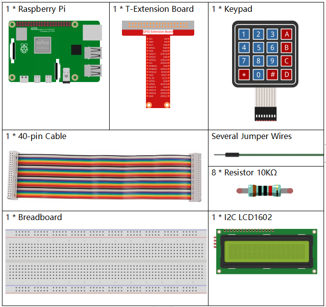

注釈
こんにちは、SunFounderのRaspberry Pi & Arduino & ESP32愛好家コミュニティへようこそ！Facebook上でRaspberry Pi、Arduino、ESP32についてもっと深く掘り下げ、他の愛好家と交流しましょう。
参加する理由は？
エキスパートサポート：コミュニティやチームの助けを借りて、販売後の問題や技術的な課題を解決します。
学び＆共有：ヒントやチュートリアルを交換してスキルを向上させましょう。
独占的なプレビュー：新製品の発表や先行プレビューに早期アクセスしましょう。
特別割引：最新製品の独占割引をお楽しみください。
祭りのプロモーションとギフト：ギフトや祝日のプロモーションに参加しましょう。
👉 私たちと一緒に探索し、創造する準備はできていますか？[ここ]をクリックして今すぐ参加しましょう！
3.1.12 ゲーム–数字推測
前書き
数字を推測することは、あなたとあなたの友人が交互に数字を入力する楽しいパーティーゲームである（0〜99）。 プレーヤーがなぞなぞに正しく答えるまで、数字を入力すると範囲は小さくなる。 その後、プレイヤーは敗北し、処罰される。たとえば、ラッキーナンバーが51で、 プレーヤーがそれを見ることができず、プレーヤー①が50を入力する場合、番号範囲は50〜99に変わる。 もしプレイヤー②が70を入力する場合、番号の範囲は50〜70になる。プレイヤー③が51を入力した場合、 このプレイヤーは不運なプレイヤーである。 ここでは、キーパッドを使用して数字を入力し、LCDを使用して結果を表示させる。
部品
回路図
T-Board Name |
physical |
wiringPi |
BCM |
GPIO18 |
Pin 12 |
1 |
18 |
GPIO23 |
Pin 16 |
4 |
23 |
GPIO24 |
Pin 18 |
5 |
24 |
GPIO25 |
Pin 22 |
6 |
25 |
SPIMOSI |
Pin 19 |
12 |
10 |
GPIO22 |
Pin 15 |
3 |
22 |
GPIO27 |
Pin 13 |
2 |
27 |
GPIO17 |
Pin 11 |
0 |
17 |
SDA1 |
Pin 3 |
SDA1(8) |
SDA1(2) |
SCL1 |
Pin 5 |
SCL1(9) |
SDA1(3) |

実験手順
ステップ1： 回路を作る

ステップ2： I2C設定 （付録を参照してください。I2Cを設定している場合は、この手順をスキップしてください。）
C言語ユーザー向け
ステップ3： ディレクトリを変更する。
cd ~/davinci-kit-for-raspberry-pi/c/3.1.12/
ステップ4： コンパイルする。
gcc 3.1.12_GAME_GuessNumber.c -lwiringPi
ステップ5： 実行する。
sudo ./a.out
プログラムの実行後、LCDに最初のページが表示される：
Welcome!
Press A to go!
「A」を押すと、ゲームが開始され、ゲームページがLCDに表示される。
Enter number:
0 ‹point‹ 99
乱数の 「point」 が生成されるが、ゲームの開始時にLCDに表示されない。 必要なのはそれを推測することである。 最終計算が完了するまで入力した数値は最初の行の最後に表示される。 （「D」を押して比較を開始し、入力値が 10 より大きい場合、自動比較が開始される。）
「point」の番号範囲が2行目に表示される。 そして、範囲内の数値を入力しなければならない。 数値を入力すると、範囲が狭くなる。 幸運にも不運にもラッキーナンバーを獲得した場合、「You've got it！」と表示される
コードの説明
コードの最初の部分は キーパッド と I2C LCD1602 の機能である。 それらの詳細については、 1.1.7 I2C LCD1602 と 2.1.5 キーパッド を参照ください。
ここで、以下のことをわかる必要がある：
/****************************************/
//Start from here
/****************************************/
void init(void){
fd = wiringPiI2CSetup(LCDAddr);
lcd_init();
lcd_clear();
for(int i=0 ; i<4 ; i++) {
pinMode(rowPins[i], OUTPUT);
pinMode(colPins[i], INPUT);
}
lcd_clear();
write(0, 0, "Welcome!");
write(0, 1, "Press A to go!");
}
この関数は元々 I2C LCD1602 と Keypad を定義し、「Welcome!」と「Press A to go!」を表示するために使用される。
void init_new_value(void){
srand(time(0));
pointValue = rand()%100;
upper = 99;
lower = 0;
count = 0;
printf("point is %d\n",pointValue);
}
この関数は乱数 point を生成し、ポイントの範囲ヒントをリセットしする。
bool detect_point(void){
if(count > pointValue){
if(count < upper){
upper = count;
}
}
else if(count < pointValue){
if(count > lower){
lower = count;
}
}
else if(count = pointValue){
count = 0;
return 1;
}
count = 0;
return 0;
}
detect_point() は入力番号を生成された point と比較する。
比較結果が同じではない場合、 count は値を 上限 と 下限 に割り当て、「 0 」を返す。
それ以外の場合、結果が同じであると示す場合、「 1 」を返す。
void lcd_show_input(bool result){
char *str=NULL;
str =(char*)malloc(sizeof(char)*3);
lcd_clear();
if (result == 1){
write(0,1,"You've got it!");
delay(5000);
init_new_value();
lcd_show_input(0);
return;
}
write(0,0,"Enter number:");
Int2Str(str,count);
write(13,0,str);
Int2Str(str,lower);
write(0,1,str);
write(3,1,"<Point<");
Int2Str(str,upper);
write(12,1,str);
}
この関数はゲームページを表示するために使用される。関数 Int2Str(str、count) に注意してください。
lcdを正しく表示するために、これらの変数 count 、 lower と upper を 整数 から 文字列 に変換する。
int main(){
unsigned char pressed_keys[BUTTON_NUM];
unsigned char last_key_pressed[BUTTON_NUM];
if(wiringPiSetup() == -1){ //when initialize wiring failed,print messageto screen
printf("setup wiringPi failed !");
return 1;
}
init();
init_new_value();
while(1){
keyRead(pressed_keys);
bool comp = keyCompare(pressed_keys, last_key_pressed);
if (!comp){
if(pressed_keys[0] != 0){
bool result = 0;
if(pressed_keys[0] == 'A'){
init_new_value();
lcd_show_input(0);
}
else if(pressed_keys[0] == 'D'){
result = detect_point();
lcd_show_input(result);
}
else if(pressed_keys[0] >='0' && pressed_keys[0] <= '9'){
count = count * 10;
count = count + (pressed_keys[0] - 48);
if (count>=10){
result = detect_point();
}
lcd_show_input(result);
}
}
keyCopy(last_key_pressed, pressed_keys);
}
delay(100);
}
return 0;
}
main() には、以下に示すように、プログラムのプロセス全体が含まれている：
I2C LCD1602 と キーパッド を初期化する。
init_new_value()を使用して、 0〜99 の乱数を作成する。ボタンが押されているかどうかを判断し、ボタンの読み取り値を取得する。
ボタン「 A 」を押すと、 0〜99 の乱数が表示され、ゲームが開始される。
ボタン「 D 」が押されたことが検出されると、プログラムは結果判定に入り、LCDに結果を表示する。このステップは数字を1つだけ押してからボタン「 D 」を押したときの結果を判断するために役立つ。
ボタン 0-9 を押すと、coun の値が変更されます。 カウント が 10 より大きい場合、判断が開始されます。
ゲームの変化とその値は LCD1602 に表示される。
Python言語ユーザー向け
ステップ3： ディレクトリを変更する。
cd ~/davinci-kit-for-raspberry-pi/python/
ステップ4： 実行。
sudo python3 3.1.12_GAME_GuessNumber.py
プログラムの実行後、LCDに最初のページが表示される：
Welcome!
Press A to go!
「A」を押すと、ゲームが開始され、ゲームページがLCDに表示される。
Enter number:
0 ‹point‹ 99
乱数の 「point」 が生成されるが、ゲームの開始時にLCDに表示されない。 必要なのはそれを推測することである。 最終計算が完了するまで入力した数値は最初の行の最後に表示される。（「D」を押して比較を開始し、入力値が 10 より大きい場合、自動比較が開始される。）
「point」の番号範囲が2行目に表示される。そして、範囲内の数値を入力しなければならない。 数値を入力すると、範囲が狭くなる。 幸運にも不運にもラッキーナンバーを獲得した場合、「You've got it！」と表示される
コード
注釈
以下のコードを 変更/リセット/コピー/実行/停止 できます。 ただし、その前に、 davinci-kit-for-raspberry-pi/python のようなソースコードパスに移動する必要があります。
import RPi.GPIO as GPIO
import time
import LCD1602
import random
##################### HERE IS THE KEYPAD LIBRARY TRANSPLANTED FROM Arduino ############
#class Key:Define some of the properties of Key
class Keypad():
def __init__(self, rowsPins, colsPins, keys):
self.rowsPins = rowsPins
self.colsPins = colsPins
self.keys = keys
GPIO.setwarnings(False)
GPIO.setmode(GPIO.BCM)
GPIO.setup(self.rowsPins, GPIO.OUT, initial=GPIO.LOW)
GPIO.setup(self.colsPins, GPIO.IN, pull_up_down=GPIO.PUD_DOWN)
def read(self):
pressed_keys = []
for i, row in enumerate(self.rowsPins):
GPIO.output(row, GPIO.HIGH)
for j, col in enumerate(self.colsPins):
index = i * len(self.colsPins) + j
if (GPIO.input(col) == 1):
pressed_keys.append(self.keys[index])
GPIO.output(row, GPIO.LOW)
return pressed_keys
################ EXAMPLE CODE START HERE ################
count = 0
pointValue = 0
upper=99
lower=0
def setup():
global keypad, last_key_pressed,keys
rowsPins = [18,23,24,25]
colsPins = [10,22,27,17]
keys = ["1","2","3","A",
"4","5","6","B",
"7","8","9","C",
"*","0","#","D"]
keypad = Keypad(rowsPins, colsPins, keys)
last_key_pressed = []
LCD1602.init(0x27, 1) # init(slave address, background light)
LCD1602.clear()
LCD1602.write(0, 0, 'Welcome!')
LCD1602.write(0, 1, 'Press A to Start!')
def init_new_value():
global pointValue,upper,count,lower
pointValue = random.randint(0,99)
upper = 99
lower = 0
count = 0
print('point is %d' %(pointValue))
def detect_point():
global count,upper,lower
if count > pointValue:
if count < upper:
upper = count
elif count < pointValue:
if count > lower:
lower = count
elif count == pointValue:
count = 0
return 1
count = 0
return 0
def lcd_show_input(result):
LCD1602.clear()
if result == 1:
LCD1602.write(0,1,'You have got it!')
time.sleep(5)
init_new_value()
lcd_show_input(0)
return
LCD1602.write(0,0,'Enter number:')
LCD1602.write(13,0,str(count))
LCD1602.write(0,1,str(lower))
LCD1602.write(3,1,' < Point < ')
LCD1602.write(13,1,str(upper))
def loop():
global keypad, last_key_pressed,count
while(True):
result = 0
pressed_keys = keypad.read()
if len(pressed_keys) != 0 and last_key_pressed != pressed_keys:
if pressed_keys == ["A"]:
init_new_value()
lcd_show_input(0)
elif pressed_keys == ["D"]:
result = detect_point()
lcd_show_input(result)
elif pressed_keys[0] in keys:
if pressed_keys[0] in list(["A","B","C","D","#","*"]):
continue
count = count * 10
count += int(pressed_keys[0])
if count >= 10:
result = detect_point()
lcd_show_input(result)
print(pressed_keys)
last_key_pressed = pressed_keys
time.sleep(0.1)
# Define a destroy function for clean up everything after the script finished
def destroy():
# Release resource
GPIO.cleanup()
LCD1602.clear()
if __name__ == '__main__': # Program start from here
try:
setup()
while True:
loop()
except KeyboardInterrupt: # When 'Ctrl+C' is pressed, the program destroy() will be executed.
destroy()
コードの説明
コードの最初の部分は キーパッド と I2C LCD1602 の機能である。 それらの詳細については、 1.1.7 I2C LCD1602 と 2.1.5 キーパッド を参照ください。
ここで、以下のことをわかる必要がある：
def init_new_value():
global pointValue,upper,count,lower
pointValue = random.randint(0,99)
upper = 99
lower = 0
count = 0
print('point is %d' %(pointValue))
この関数は乱数「point」を生成し、ポイントの範囲ヒントをリセットしする。
def detect_point():
global count,upper,lower
if count > pointValue:
if count < upper:
upper = count
elif count < pointValue:
if count > lower:
lower = count
elif count == pointValue:
count = 0
return 1
count = 0
return 0
detect_point() は入力番号 count を生成された point と比較する。
比較結果が同じではない場合、 count は値を 上限 と 下限 に割り当て、「 0 」を返す。
それ以外の場合、結果が同じであると示す場合、「 1 」を返す。
def lcd_show_input(result):
LCD1602.clear()
if result == 1:
LCD1602.write(0,1,'You have got it!')
time.sleep(5)
init_new_value()
lcd_show_input(0)
return
LCD1602.write(0,0,'Enter number:')
LCD1602.write(13,0,str(count))
LCD1602.write(0,1,str(lower))
LCD1602.write(3,1,' < Point < ')
LCD1602.write(13,1,str(upper))
この関数はゲームページを表示するために使用される。
sstr(count) : Because write() はデータ型のみをサポートできるため、
文字列, str() は 数値 を 文字列 に変換するために必要である。
def loop():
global keypad, last_key_pressed,count
while(True):
result = 0
pressed_keys = keypad.read()
if len(pressed_keys) != 0 and last_key_pressed != pressed_keys:
if pressed_keys == ["A"]:
init_new_value()
lcd_show_input(0)
elif pressed_keys == ["D"]:
result = detect_point()
lcd_show_input(result)
elif pressed_keys[0] in keys:
if pressed_keys[0] in list(["A","B","C","D","#","*"]):
continue
count = count * 10
count += int(pressed_keys[0])
if count >= 10:
result = detect_point()
lcd_show_input(result)
print(pressed_keys)
last_key_pressed = pressed_keys
time.sleep(0.1)
main() には、以下に示すように、プログラムのプロセス全体が含まれている：
I2C LCD1602 と キーパッド を初期化する。
ボタンが押されているかどうかを判断し、ボタンの読み取り値を取得する。
ボタン「 A 」を押すと、 0〜99 の乱数が表示され、ゲームが開始される。
ボタン「 D 」が押されたことが検出されると、プログラムは結果判定に入る。
ボタン 0-9 を押すと、coun の値が変更されます。 カウント が 10 より大きい場合、判断が開始されます。
ゲームの変化とその値は LCD1602 に表示される。